Fragen in 9 Sprachen, offline
Vorbereitete Fragen und Anweisungen für den Einsatz in 9 Sprachen: groß gezeigt, vorgelesen, mit Ja/Nein-Antwort, Schmerzskala und Körperkarte. Ohne Netz.
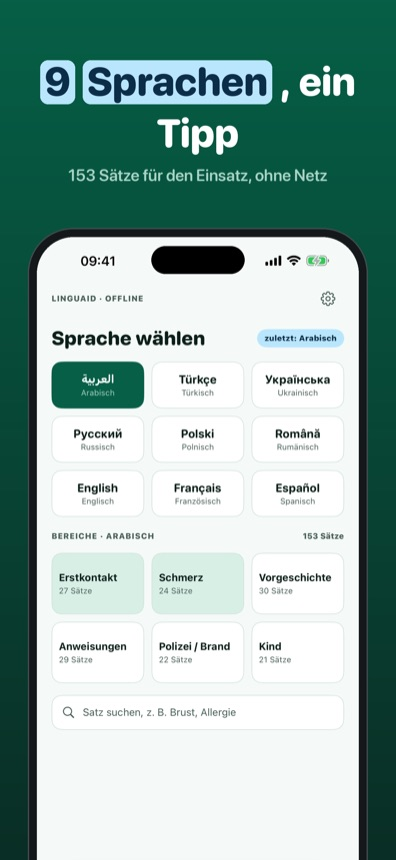
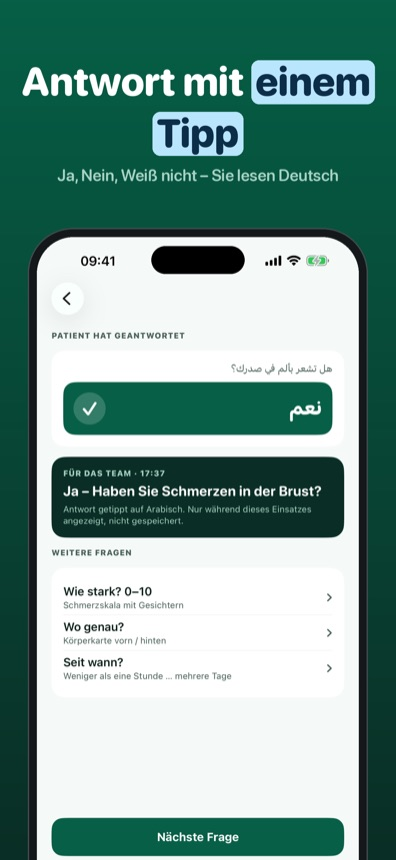
Linguaid hilft Rettungsdienst, Feuerwehr, Polizei und Katastrophenschutz, wenn keine gemeinsame Sprache da ist. Sie wählen die Sprache Ihres Gegenübers, tippen eine Frage an und zeigen sie groß in seiner Schrift – Arabisch von rechts nach links. Linguaid liest den Satz mit den Stimmen des Geräts vor, wo vorhanden. Die Antwort tippt Ihr Gegenüber selbst: Ja, Nein oder Weiß nicht, in der eigenen Sprache. Sie sehen das Ergebnis in Ihrer Sprache. Mit Schmerzskala von 0 bis 10 und Körperkarte zum Zeigen. Alles funktioniert ohne Netz.
Erstkontakt und Schmerz mit Schmerzskala und Körperkarte gehen in allen 9 Sprachen ohne Kauf. Linguaid Plus ist ein Einmalkauf: Vorgeschichte, Anweisungen, Polizei/Brand, Kind und Ihr eigenes Favoriten-Set. Kein Abo.
Linguaid ist eine Kommunikationshilfe. Es ersetzt weder Dolmetscher noch eine medizinische Beurteilung, stellt keine Diagnose und gibt keine Behandlungs- oder Dosierungsempfehlung. Alle deutschen Sätze sind eigene Texte; die Übersetzungen wurden maschinengestützt erstellt und durch eine unabhängige Rückübersetzung Satz für Satz abgeglichen. Fehler melden Sie direkt aus der Karte. Linguaid steht in keiner Verbindung zu Behörden oder Hilfsorganisationen.
Bald im App Store. Datenschutz · Support
Vragen in 9 talen, offline
Voorbereide vragen en instructies voor de inzet in 9 talen: groot getoond, voorgelezen, met ja/nee-antwoord, pijnschaal en lichaamskaart. Zonder netwerk.
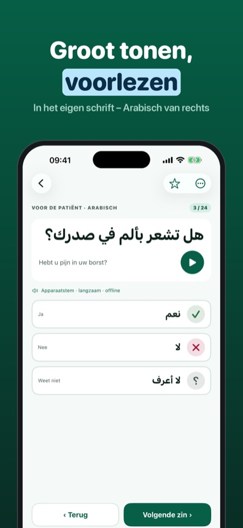
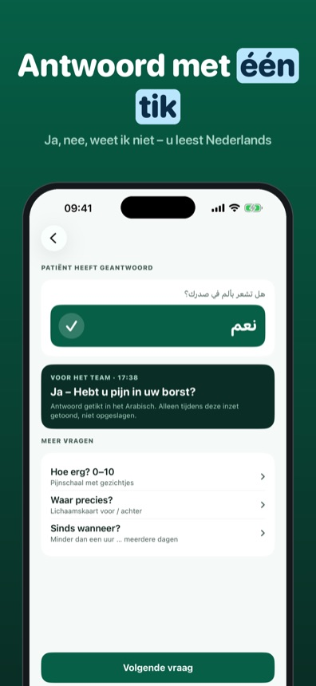
Linguaid helpt ambulance, brandweer, politie en rampenbestrijding als er geen gedeelde taal is. U kiest de taal van de ander, tikt een vraag aan en toont die groot in het eigen schrift – Arabisch van rechts naar links. Linguaid leest de zin voor met de stemmen van het toestel, waar beschikbaar. De ander tikt zelf het antwoord: ja, nee of weet ik niet, in de eigen taal. U ziet het resultaat in het Nederlands. Met pijnschaal van 0 tot 10 en een lichaamskaart om aan te wijzen. Alles werkt zonder netwerk.
Eerste contact en pijn met pijnschaal en lichaamskaart werken in alle 9 talen zonder aankoop. Linguaid Plus is een eenmalige aankoop: voorgeschiedenis, instructies, politie/brand, kind en uw eigen favorietenset. Geen abonnement.
Linguaid is een communicatiehulpmiddel. Het vervangt geen tolk en geen medische beoordeling, stelt geen diagnose en geeft geen behandel- of doseringsadvies. Alle zinnen zijn eigen teksten; de vertalingen zijn met machinale hulp gemaakt en zin voor zin gecontroleerd met een onafhankelijke terugvertaling. Fouten meldt u direct vanuit de kaart. Linguaid is niet verbonden aan overheden of hulporganisaties.
Frågor på 9 språk, offline
Förberedda frågor och instruktioner för utryckningen på 9 språk: stor text, uppläsning, svar med ja/nej, smärtskala och kroppskarta. Utan nät.
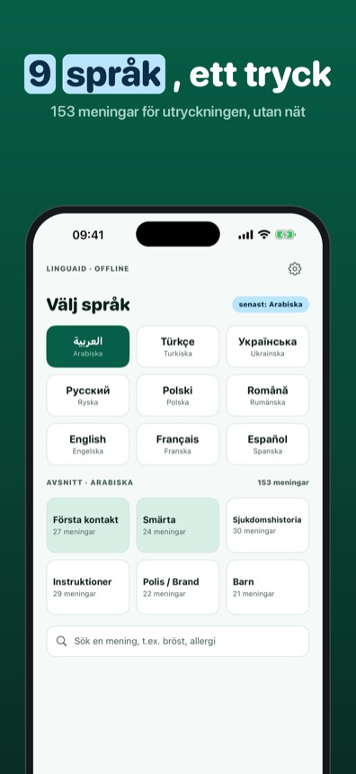
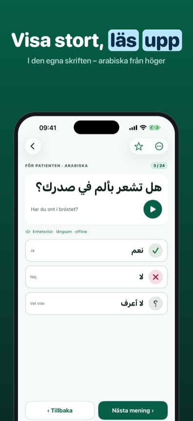
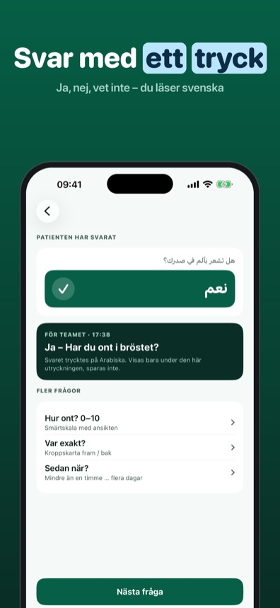
Linguaid hjälper ambulans, räddningstjänst, polis och krisberedskap när ni saknar ett gemensamt språk. Du väljer den andras språk, trycker på en fråga och visar den stort i den egna skriften – arabiska från höger till vänster. Linguaid läser upp meningen med enhetens röster, där de finns. Svaret trycker personen själv: ja, nej eller vet inte, på sitt eget språk. Du ser resultatet på svenska. Med smärtskala från 0 till 10 och kroppskarta att peka på. Allt fungerar utan nät.
Första kontakt och smärta med smärtskala och kroppskarta fungerar på alla 9 språk utan köp. Linguaid Plus är ett engångsköp: sjukdomshistoria, instruktioner, polis/brand, barn och din egen favoritlista. Ingen prenumeration.
Linguaid är ett kommunikationsstöd. Appen ersätter varken tolk eller medicinsk bedömning, ställer ingen diagnos och ger inga råd om behandling eller dosering. Alla meningar är egna texter; översättningarna är gjorda med maskinstöd och kontrollerade mening för mening med en oberoende återöversättning. Fel rapporterar du direkt från kortet. Linguaid har ingen koppling till myndigheter eller hjälporganisationer.
Snart i App Store. Integritet · Support
Pytania w 9 językach, offline
Przygotowane pytania i polecenia na akcję w 9 językach: duży tekst, odczyt na głos, odpowiedź tak/nie, skala bólu i mapa ciała. Bez internetu.
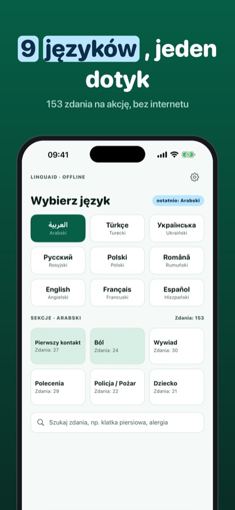
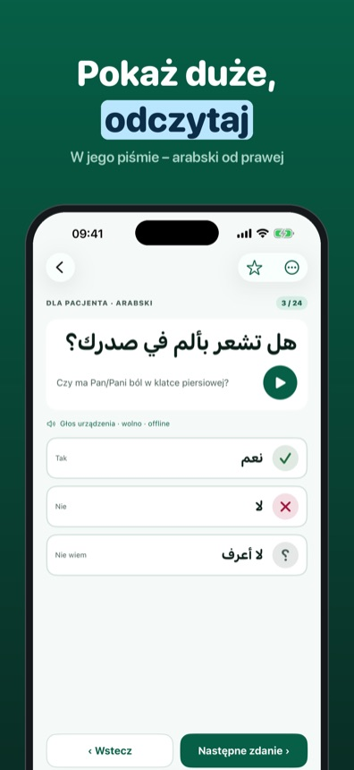
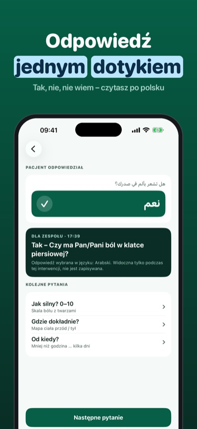
Linguaid pomaga zespołom ratownictwa medycznego, straży pożarnej, policji i zarządzania kryzysowego, gdy brakuje wspólnego języka. Wybierasz język rozmówcy, dotykasz pytania i pokazujesz je dużym tekstem w jego piśmie – arabski od prawej do lewej. Linguaid odczytuje zdanie głosami urządzenia, jeśli są dostępne. Odpowiedź rozmówca wybiera sam: tak, nie albo nie wiem, we własnym języku. Ty widzisz wynik po polsku. Do tego skala bólu od 0 do 10 i mapa ciała do wskazania miejsca. Wszystko działa bez internetu.
Pierwszy kontakt i ból ze skalą bólu i mapą ciała działają we wszystkich 9 językach bez zakupu. Linguaid Plus to jednorazowy zakup: wywiad, polecenia, policja/pożar, dziecko i własny zestaw ulubionych. Bez subskrypcji.
Linguaid to pomoc w komunikacji. Nie zastępuje tłumacza ani oceny medycznej, nie stawia diagnozy i nie podaje zaleceń leczenia ani dawkowania. Wszystkie zdania to własne teksty; tłumaczenia powstały ze wsparciem maszynowym i zostały sprawdzone zdanie po zdaniu niezależnym tłumaczeniem zwrotnym. Błędy zgłosisz bezpośrednio z karty. Linguaid nie jest powiązany z urzędami ani organizacjami pomocowymi.
Wkrótce w App Store. Prywatność · Pomoc
Spørgsmål på 9 sprog, offline
Forberedte spørgsmål og instrukser til indsatsen på 9 sprog: stor tekst, oplæsning, svar med ja/nej, smerteskala og kropskort. Uden net.
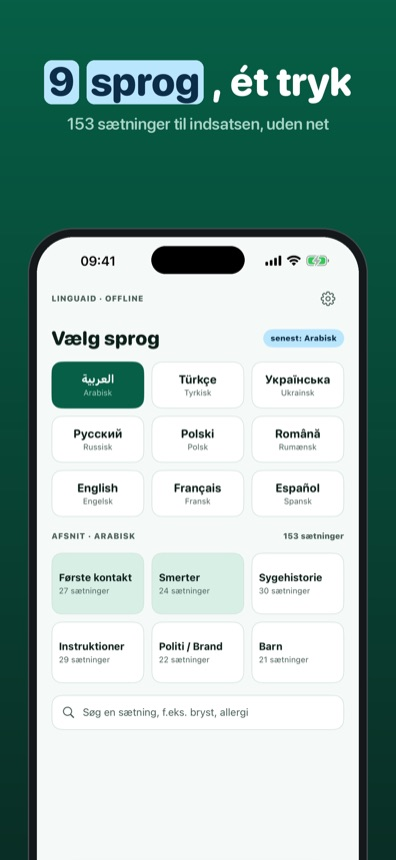
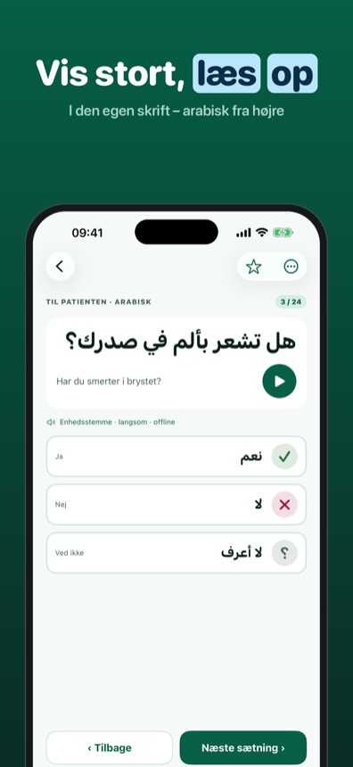
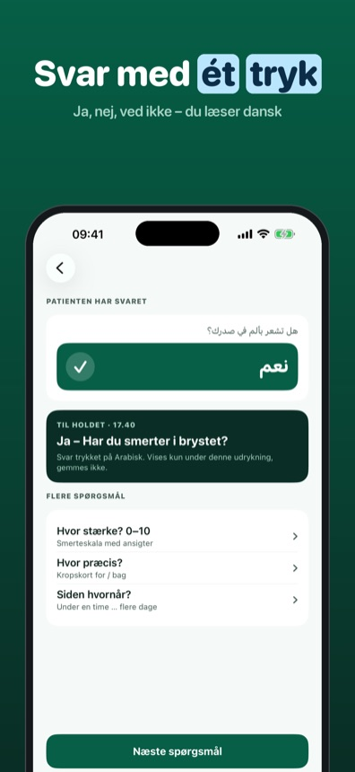
Linguaid hjælper ambulance, brandvæsen, politi og beredskab, når I ikke har et fælles sprog. Du vælger den andens sprog, trykker på et spørgsmål og viser det stort i den egen skrift – arabisk fra højre mod venstre. Linguaid læser sætningen op med enhedens stemmer, hvor de findes. Svaret trykker personen selv: ja, nej eller ved ikke, på sit eget sprog. Du ser resultatet på dansk. Med smerteskala fra 0 til 10 og kropskort at pege på. Alt virker uden net.
Første kontakt og smerte med smerteskala og kropskort virker på alle 9 sprog uden køb. Linguaid Plus er et engangskøb: sygehistorie, instrukser, politi/brand, barn og dit eget favoritsæt. Intet abonnement.
Linguaid er en kommunikationshjælp. Appen erstatter hverken tolk eller medicinsk vurdering, stiller ingen diagnose og giver ingen råd om behandling eller dosering. Alle sætninger er egne tekster; oversættelserne er lavet med maskinel hjælp og kontrolleret sætning for sætning med en uafhængig tilbageoversættelse. Fejl melder du direkte fra kortet. Linguaid har ingen forbindelse til myndigheder eller hjælpeorganisationer.